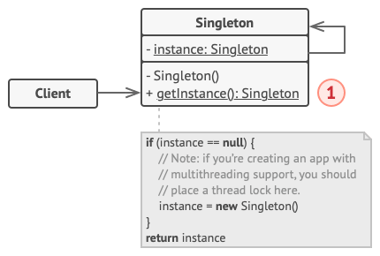

Singleton
Singleton is a creational design pattern that lets you ensure that a class has only one instance, while providing a global access point to this instance.
Problem
The Singleton pattern solves two problems at the same time, violating the Single Responsibility Principle:
-
1. Ensure that a class has just a single instance. Why would anyone want to control how many instances a class has? The most common reason for this is to control access to some shared resource—for example, a database or a file.
Here’s how it works: imagine that you created an object, but after a while decided to create a new one. Instead of receiving a fresh object, you’ll get the one you already created.
Note that this behavior is impossible to implement with a regular constructor since a constructor call must always return a new object by design.
Clients may not even realize that they’re working with the same object all the time.
-
2. Provide a global access point to that instance. Remember those global variables that you (all right, me) used to store some essential objects? While they’re very handy, they’re also very unsafe since any code can potentially overwrite the contents of those variables and crash the app.
Just like a global variable, the Singleton pattern lets you access some object from anywhere in the program. However, it also protects that instance from being overwritten by other code.
There’s another side to this problem: you don’t want the code that solves problem #1 to be scattered all over your program. It’s much better to have it within one class, especially if the rest of your code already depends on it.
Nowadays, the Singleton pattern has become so popular that people may call something a singleton even if it solves just one of the listed problems.
Solution
All implementations of the Singleton have these two steps in common:
- Make the default constructor private, to prevent other objects from using the
newoperator with the Singleton class. - Create a static creation method that acts as a constructor. Under the hood, this method calls the private constructor to create an object and saves it in a static field. All following calls to this method return the cached object.
If your code has access to the Singleton class, then it’s able to call the Singleton’s static method. So whenever that method is called, the same object is always returned.
Real-World Analogy
The government is an excellent real-world example of the Singleton pattern. A country can have only one official government. Regardless of which individuals form the cabinet, the title “The Government of X” represents a single, globally accessible authority.
Structure

-
The Singleton class exposes a static
getInstance()method that always returns the same instance.
The constructor is private or protected to prevent direct instantiation. The static method is the only allowed access point.
C++ Implementations
/**
* The Singleton class defines the `GetInstance` method that serves as an
* alternative to constructor and lets clients access the same instance of this
* class over and over.
*/
class Singleton
{
/**
* The Singleton's constructor should always be private to prevent direct
* construction calls with the `new` operator.
*/
protected:
Singleton(const std::string value): value_(value)
{
}
static Singleton* singleton_;
std::string value_;
public:
/**
* Singletons should not be cloneable.
*/
Singleton(Singleton &other) = delete;
/**
* Singletons should not be assignable.
*/
void operator=(const Singleton &) = delete;
/**
* This is the static method that controls the access to the singleton
* instance. On the first run, it creates a singleton object and places it
* into the static field. On subsequent runs, it returns the client existing
* object stored in the static field.
*/
static Singleton *GetInstance(const std::string& value);
/**
* Finally, any singleton should define some business logic, which can be
* executed on its instance.
*/
void SomeBusinessLogic()
{
// ...
}
std::string value() const{
return value_;
}
};
Singleton* Singleton::singleton_= nullptr;;
/**
* Static methods should be defined outside the class.
*/
Singleton *Singleton::GetInstance(const std::string& value)
{
/**
* This is a safer way to create an instance. instance = new Singleton is
* dangeruous in case two instance threads wants to access at the same time
*/
if(singleton_==nullptr){
singleton_ = new Singleton(value);
}
return singleton_;
}
void ThreadFoo(){
// Following code emulates slow initialization.
std::this_thread::sleep_for(std::chrono::milliseconds(1000));
Singleton* singleton = Singleton::GetInstance("FOO");
std::cout << singleton->value() << "\n";
}
void ThreadBar(){
// Following code emulates slow initialization.
std::this_thread::sleep_for(std::chrono::milliseconds(1000));
Singleton* singleton = Singleton::GetInstance("BAR");
std::cout << singleton->value() << "\n";
}
int main()
{
std::cout <<"If you see the same value, then singleton was reused (yay!\n" <<
"If you see different values, then 2 singletons were created (booo!!)\n\n" <<
"RESULT:\n";
std::thread t1(ThreadFoo);
std::thread t2(ThreadBar);
t1.join();
t2.join();
return 0;
}
Applicability
Use the Singleton when a class must have only one instance accessible to all clients, such as a shared database connection.
The Singleton pattern restricts all object creation and exposes a single global access method that either creates the instance or returns the existing one.
Use Singleton when you need stricter control over global variables.
Unlike global variables, a Singleton guarantees that only one instance can ever exist, protected from replacement.
You may also intentionally loosen the restriction by modifying the
getInstance()
method to allow multiple instances if needed.
⚖️ Pros & Cons
- You can be sure that a class has only a single instance.
- You gain a global access point to that instance
- The singleton object is initialized only when it’s requested for the first time.
- Violates the Single Responsibility Principle. The pattern solves two problems at the time.
- The Singleton pattern can mask bad design, for instance, when the components of the program know too much about each other.
- The pattern requires special treatment in a multithreaded environment so that multiple threads won’t create a singleton object several times
- It may be difficult to unit test the client code of the Singleton because many test frameworks rely on inheritance when producing mock objects. Since the constructor of the singleton class is private and overriding static methods is impossible in most languages, you will need to think of a creative way to mock the singleton. Or just don’t write the tests. Or don’t use the Singleton pattern.
Relations with Other Patterns
- A Facade can often be implemented as a Singleton, since only one façade object is typically needed.
-
Flyweight resembles a
Singleton when reduced to a single shared intrinsic object, but with key differences:
- There should be only one Singleton instance, whereas a Flyweight class can have multiple instances with different intrinsic states.
- The Singleton object can be mutable. Flyweight objects are immutable.
- Abstract Factory, Builder, and Prototype can all be implemented as Singletons when only one instance is desirable.